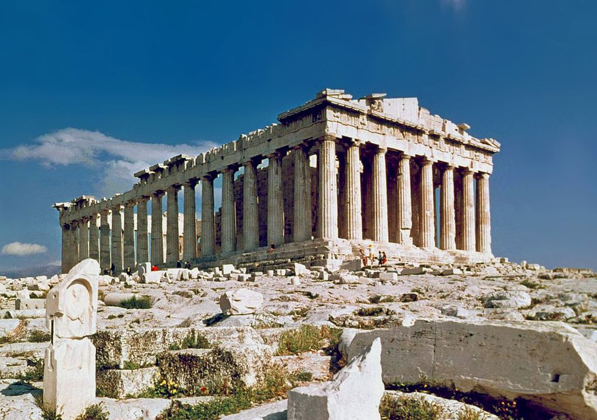
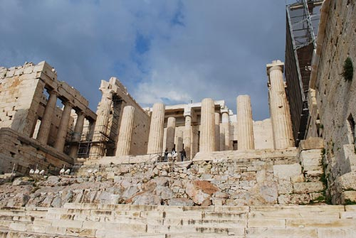
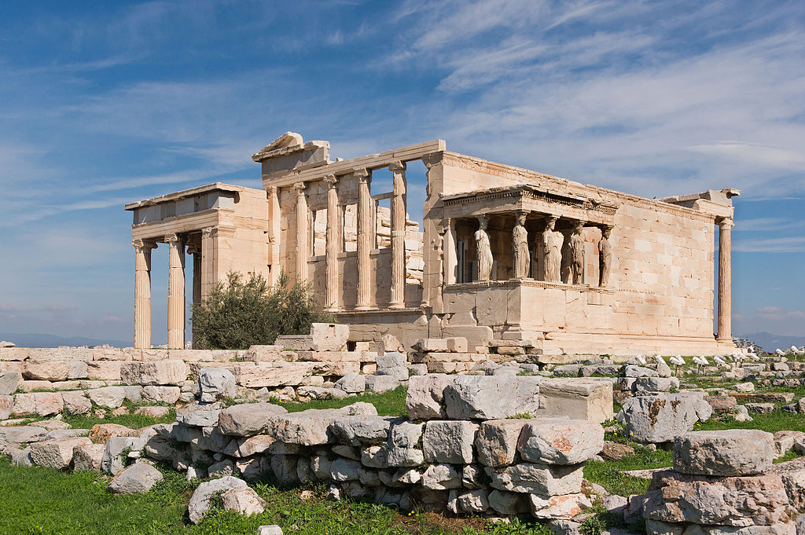
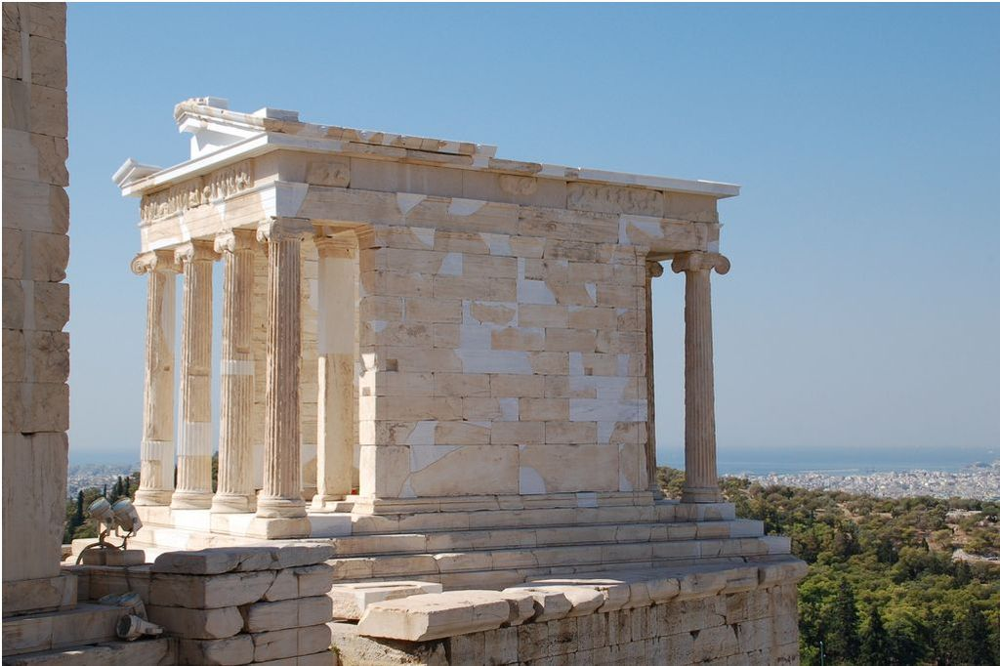

L’acropole d’Athènes
L'Acropole d'Athènes et ses monuments sont le symbole universel de l'esprit et de la civilisation classiques, et forment le plus extraordinaire ensemble architectural et artistique légué par la Grèce antique au reste du monde.L'Acropole, qui date du 5e siècle avant J-C, est l'un des sites plus visités au monde. Il est situé sur une colline de hauteur moyenne (156m) qui s'élève dans le bassin d'Athènes. Ses dimensions sont d'environ 170 m sur 350 m. La colline est rocheuse et escarpée de tous les côtés, à l'exception du côté ouest, et possède un sommet étendu et presque plat. Depuis plus de 3 300 ans, de solides murs de fortification entourent le sommet de l'Acropole. Expression d'une des plus brillantes civilisations de l'humanité, l'Acropole surplombe fièrement la contemporaine Athènes, capitale de la Grèce. Parfaite illustration de l'intense culte des dieux grecs pendant des millénaires, quatre monuments mythiques se partagent les faveurs du célèbre mont.
Le Parthénon

Le Parthénon est l'édifice principal de l'ensemble architectural de l'Acropole, en plus d'être le plus grand symbole de la beauté de l'architecture classique de la Grèce antique. Il est dédié à la déesse Athéna que les Athéniens considéraient comme la patronne de leur cité. En effet, construit entre 477 et 432 av. J.-C., l'imposant bâtiment de style dorique a été créé pour abriter une sculpture colossale d'Athéna Parthénos. Celle-ci était fabriquée en bois, en ivoire et en or, et mesurait douze mètres de haut.
Propylées
Construites entre 437 et 432 av. J.-C., les Propylées constituaient l'entrée grandiose de l'Acropole. Le monument a été réalisé en marbre pentélique blanc, et en marbre gris d'Eleusis, autour d'une structure en fer. L'édifice se compose d'un bâtiment central entouré de deux ailes. Les colonnes doriques de sa façade reprennent les proportions (mais pas la taille) de celles du Parthénon. Le mur s'ouvre sur cinq portes, la plus grande étant l'entrée principale. Le plafond dans la partie est de l'édifice était très célèbre dans l'Antiquité, considéré par Pausanias comme "jusqu'à présent inégalé". Il se constituait de blocs de marbre taillés dans la forme de coffres de plafond, peints d'étoiles dorées sur un fond bleu. Des sculptures ornaient également les Propylées comme l'Hermès Propyléos, les Charites, et la statue de l'hétaïre Léaina (la lionne) en bronze d'Amphicratès
L'Érechthéion

Modèle de perfection architecturale, l'Érechthéion fut construit selon la légende sur l'emplacement de l'ultime lutte entre Poséidon et Athéna pour savoir qui des deux serait le protecteur de la cité. La partie la plus surprenante de l'Érechthéion est le toit de la galerie sud, soutenue par les Caryatides, six colonnes d'allure féminine supportant le toit du temple. Celles que vous pouvez voir à l'Acropole sont des copies des originales qui sont conservées au Nouveau Musée de l'Acropole.
Le Temple d’Athéna Niké

Le Temple d'Athéna Niké, situé sur l'aile sud des Propylées, a été construit en 420 av. J.-C. pour commémorer la victoire des Grecs sur les Perses durant la bataille de Salamine. Il était dédié à Athéna, déesse de la victoire, d'où son nom "Nikè", voulant dire victoire. Il est également appelé Victoire Aptère.
Ce temple se dresse sur un promontoire de 9.50 m de hauteur. Il est ouvert, on y accède par l'aile sud-ouest des Propylées. ll est d'ordre ionique, entièrement en marbre pentélique (marbre blanc provenant du Mont Pentélique). Il est constitué de 4 colonnes sur les façades est et ouest. On peut observer à l'intérieur, en haut des murs, une frise représentant, sur le côté est, une assemblée des Dieux avec Athéna à son centre, et sur les autres côtés, des scènes de combat. On retrouve à l'extérieur une procession de Victoires sur un parapet d'environ un mètre de hauteur. On trouve également la statue d'Athéna Nikè en bois appelé le xoanondans le naos (pièce principale), qui représente Athéna avec une grenade dans sa main droite, symbole de fertilité, et dans sa main gauche, un casque. Athéna Nikè est représentée sans aile, contrairement aux autres statues de la Victoire, c'est pour cela que l'on parle de statue aptère. Les Athéniens prétendirent qu'il lui avait enlevé ses ailes pour qu'elle ne quitte pas la cité. On peut aussi voir une représentation sculptée de Athéna sur la balustrade.